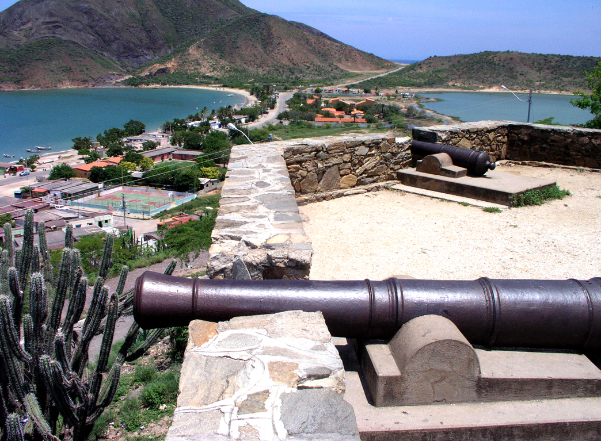
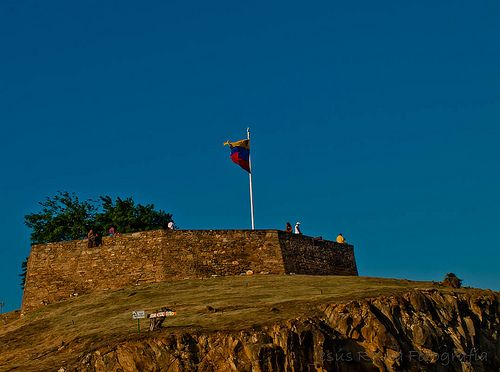

Juan Griego - Municipio Gaspar Marcano
Ver Ubicación GPS
Fortín de La Galera
Galería Fotográfica Real


Haz clic en cualquier imagen para ampliarla en alta resolución
Reseña Histórica Enriquecida
Construido en 1811 por la Junta Provincial de Margarita en lo alto de una colina estratégica para vigilar el puerto de Juan Griego y la bahía de La Galera contra incursiones navales.
Fue el glorioso escenario de la desgarradora Batalla de Juan Griego en agosto de 1817. Durante este enfrentamiento patriota contra las tropas realistas del general Pablo Morillo, la pólvora explotó trágicamente dentro del almacén del fortín, pereciendo sus valientes defensores y dando origen al nombre de la adyacente Laguna de Los Mártires.
Año de Construcción
1811
Atracción Principal
Atardeceres y relatos de los niños guías